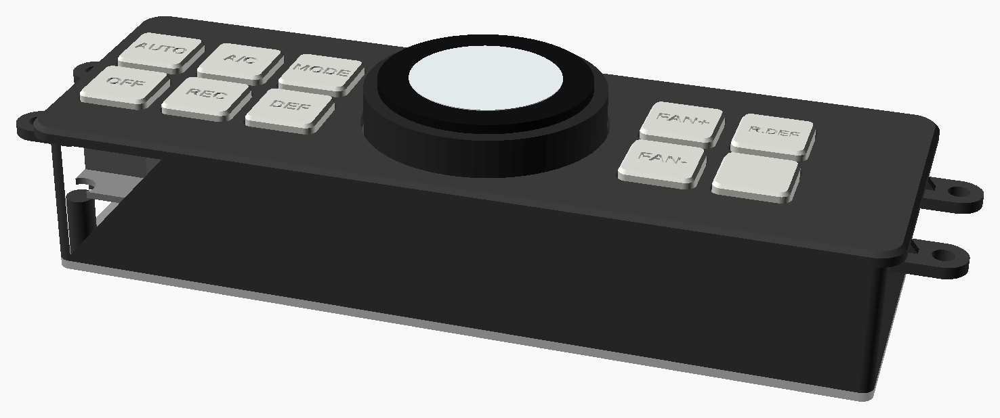
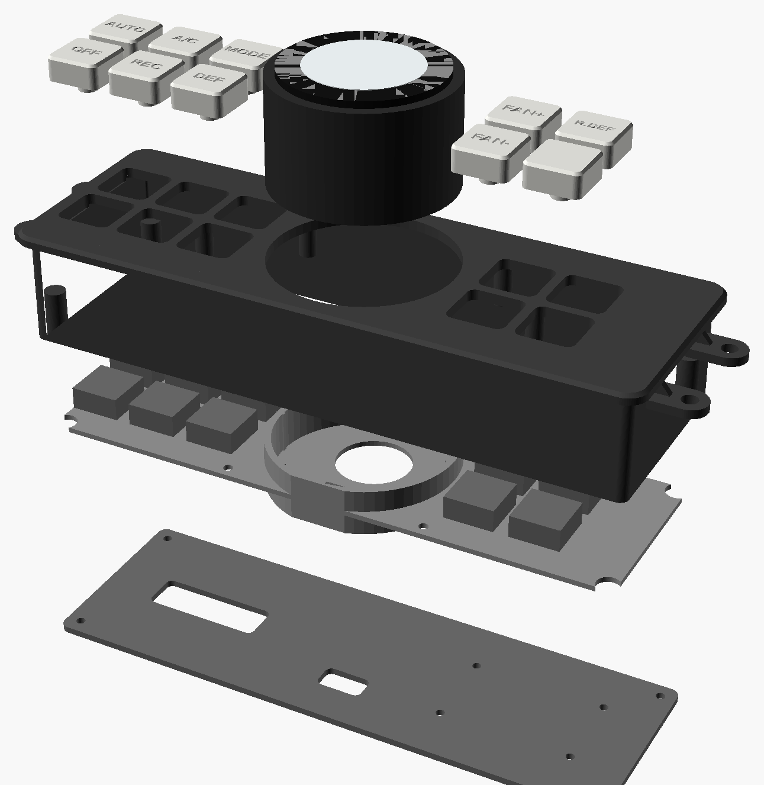

Rev A · 27 Oct 2026Piggyback, nothing on the truck gets cutDesign notes: docs/CLIMATE_PANEL.md
Side project
CLIMATE PANEL
A new face for the climate control panel: the same buttons, and one big temperature knob with a round
screen in the middle. The stock A/C computer, servos and harness stay as they are. The new panel just presses
the stock panel's switches for you: the buttons are wired straight to them, and the knob presses TEMP up and
down through tiny solid-state relays.
Three things to check first
This is drawn for the automatic panel (buttons and an LCD). If yours has three rotary dials, stop at
step 1 and send me a photo: the knob becomes a mechanical part instead. Every size in the CAD is a guess until
step 1, and the pinout comes from the A/C pages of your wiring manual.

The default layout: AUTO, A/C, MODE, OFF, REC and DEF on the left, the knob in the middle, FAN +/−, rear
defog and a spare on the right. Every position is one line in params.scad.
ASA or PETG filament for the face, plate and cover; resin or MJF for the capsnever PLA in a dash
—
Tools
Calipers, multimeter, trim tools
Fine-tip soldering iron, flux, solder wick
Computer with VS Code + PlatformIO, to flash the Dial over USB-C
01Identify the panel and measure the hole
Send a straight-on photo of the panel. Buttons and an LCD = this guide. Three dials = a different knob.
Pull the panel (trim tools; the screws are usually behind the surrounding bezel) and measure the four orange
numbers, the corner radius and the screw positions. They go into params.scad: open_w,
open_h, open_r, skirt_d, ears, ear_z.
Count the plugs on the back of the panel and note the wire colours, then find the same plugs on the A/C pages of
the wiring manual. That tells us whether the A/C computer is inside the panel or behind the glovebox.
Print fit_frame.stl (20 minutes, any filament) and push it into the hole. It should slide in with no
play and sit flat. Adjust and reprint until it does.
The knob needs about 56 mm of opening height. If the hole is lower than that, tell me and I'll swap the Dial
for a slimmer knob.
02Open the spare panel and find the switch pads
Open the spare panel on the bench. Photograph both sides of the board.
Under each button is a switch (a tact switch or a rubber dome over two interleaved pads). For each one, find the two
pads or legs that close when you press it, and mark them with a fine pen.
Do the same for each indicator LED (A/C, REC, AUTO, DEF, R.DEF): note which leg is which.
Prove it before you solder
Back in the truck with the spare panel plugged in: measure the voltage across the TEMP UP pads with the key on. It should
be 5 V or less. Then bridge them for a moment with a jumper wire. The setpoint should go up exactly one step. If either
isn't true, stop and send me the numbers.
03Print the parts

Top to bottom: caps and the Dial, faceplate, switch
plate with the Dial cup, rear cover.
cap_test.stl first: one MX hole and one cap. A switch should click into the hole and the cap should press
on firmly. Tune mx_clr and reprint until both are right.
faceplate.stl face down, ASA or PETG, 0.2 mm, 4 walls.
switch_plate.stl, flat.
rear_cover.stl, flat.
cap_0.stl … cap_9.stl, legend down, in resin or MJF if you can.
Before you print the switch plate, check which part of your Dial turns. The cup grips the bottom
dial_grip_from = 12 mm of the body, which has to be the part that doesn't.
Regenerate everything after an edit: hardware/climate_panel/cad/export_all.sh.
04Build the relay board
Solder the three relays and resistors on the perfboard. Keep the LED side (Dial) and the switch side (stock
board) on opposite edges of the board.
Grove cables: PORT.B carries G1 and G2, PORT.A carries G13. Check the colours against the Dial's pin map; GND is black.
Run two 26 AWG wires from each relay's switch side to the pads you marked in step 2.
05Flash the Dial and try it on the bench
pio test -e native
runs the knob logic tests on your computer
pio run -e climate -t upload
flashes the Dial over USB-C
Turn the knob: the setpoint on the screen moves, and a multimeter on continuity across a relay's switch side beeps
once per detent. The first boot runs a sync (about 7 s of DOWN presses, then back up to 25.0); that's normal.
06Wire the buttons and the indicator LEDs
Clip the switches into the plate. For each button, two wires from its switch to the pads you marked for the same
stock button. Twist each pair.
Indicator LEDs: desolder each one from the stock board, solder two wires in its place, and put the LED in the slot
in the top of the matching key switch. Mind the polarity.
Strain-relieve the wire bundle on the stock board with a dab of hot glue or Kapton tape.
07Put it together
Screw the switch plate onto the faceplate posts (six M2.5).
Press the caps on.
Feed the USB-C and Grove leads through the cup floor, then push the Dial into the cup from the front until it sits on the floor.
Mount the relay board on the outside of the rear cover and screw the cover on (four M2.5).
Put the stock board behind the panel or in the cavity beside it, wherever step 1 showed there's room.
08Fit it to the truck
Power: wire the 12 V → USB-C converter to an IG (key-on) feed and ground. The A/C panel's own plug has both; the
pins come from the wiring manual.
Plug the stock board into the stock harness. Screw the new panel in with the stock screws.
Key on. Check every button, one at a time, against the stock LCD or the vents: AUTO, OFF, A/C, MODE, REC,
DEF, R.DEF, FAN + and −.
Turn the knob from LO to HI one detent at a time. Each detent should be exactly one step. If one detent sometimes
gives two steps or none, the press timing needs tuning (PULSE_MS, GAP_MS).
If the knob and the A/C ever disagree, hold the screen for 2 s to re-sync.
What to send me
The panel photo, the measurements from step 1, the board photos from step 2, and the step count from LO to HI.
With those I'll redraw the face to fit exactly and set the timing. The surfacing and styling are yours.